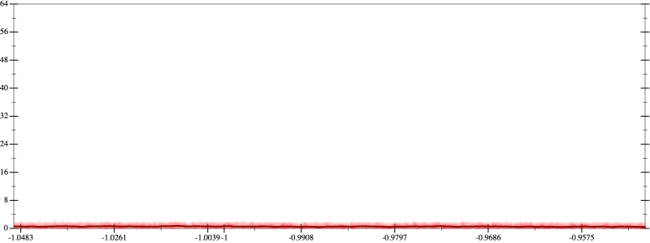
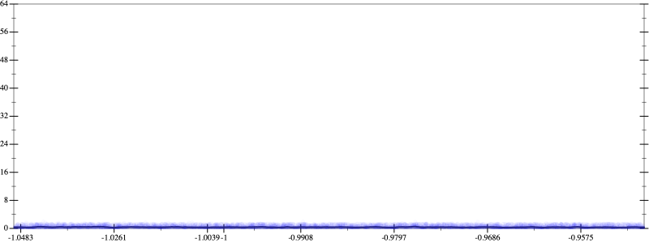
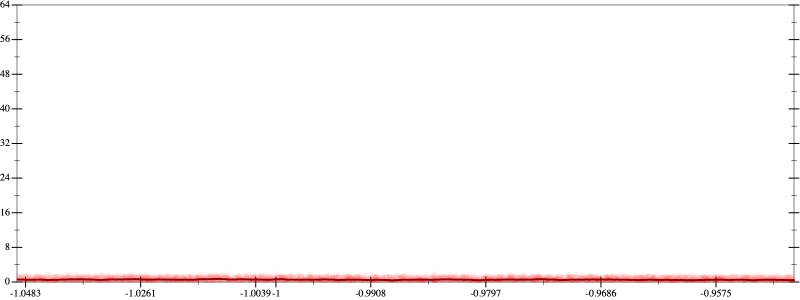
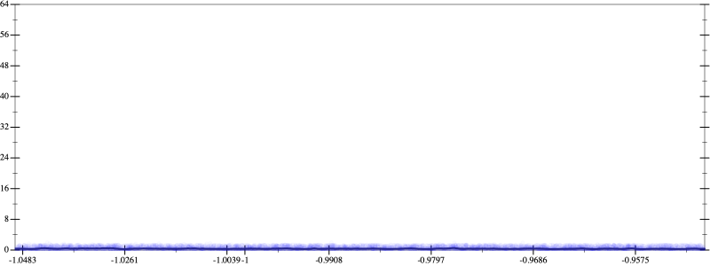

Initial program 0.5
\[\left(\left(\left(\left(\left(\left(\left(1.0 + -8.0 \cdot x\right) + 14.0 \cdot \left(x \cdot x\right)\right) + -9.333333 \cdot \left(\left(x \cdot x\right) \cdot x\right)\right) + 2.916667 \cdot \left(\left(\left(x \cdot x\right) \cdot x\right) \cdot x\right)\right) + -0.466667 \cdot \left(\left(\left(\left(x \cdot x\right) \cdot x\right) \cdot x\right) \cdot x\right)\right) + 0.038889 \cdot \left(\left(\left(\left(\left(x \cdot x\right) \cdot x\right) \cdot x\right) \cdot x\right) \cdot x\right)\right) + -0.001587 \cdot \left(\left(\left(\left(\left(\left(x \cdot x\right) \cdot x\right) \cdot x\right) \cdot x\right) \cdot x\right) \cdot x\right)\right) + 2.5 \cdot 10^{-05} \cdot \left(\left(\left(\left(\left(\left(\left(x \cdot x\right) \cdot x\right) \cdot x\right) \cdot x\right) \cdot x\right) \cdot x\right) \cdot x\right)\]
Applied simplify0.4
\[\leadsto \color{blue}{\left({\left(x \cdot x\right)}^{3} \cdot \left(2.5 \cdot 10^{-05} \cdot \left(x \cdot x\right)\right) + {\left(x \cdot x\right)}^{3} \cdot \left(-0.001587 \cdot x + 0.038889\right)\right) + \left(\left(\left(x \cdot x\right) \cdot \left(-9.333333 \cdot x + 14.0\right) + \left(\left(x \cdot x\right) \cdot \left(x \cdot x\right)\right) \cdot \left(2.916667 + -0.466667 \cdot x\right)\right) + \left(x \cdot -8.0 + 1.0\right)\right)}\]
- Using strategy
rm Applied add-cbrt-cube0.4
\[\leadsto \left({\left(x \cdot x\right)}^{3} \cdot \left(2.5 \cdot 10^{-05} \cdot \left(x \cdot x\right)\right) + {\left(x \cdot x\right)}^{3} \cdot \left(-0.001587 \cdot x + 0.038889\right)\right) + \left(\left(\left(x \cdot x\right) \cdot \color{blue}{\sqrt[3]{\left(\left(-9.333333 \cdot x + 14.0\right) \cdot \left(-9.333333 \cdot x + 14.0\right)\right) \cdot \left(-9.333333 \cdot x + 14.0\right)}} + \left(\left(x \cdot x\right) \cdot \left(x \cdot x\right)\right) \cdot \left(2.916667 + -0.466667 \cdot x\right)\right) + \left(x \cdot -8.0 + 1.0\right)\right)\]
Applied add-cbrt-cube0.4
\[\leadsto \left({\left(x \cdot x\right)}^{3} \cdot \left(2.5 \cdot 10^{-05} \cdot \left(x \cdot x\right)\right) + {\left(x \cdot x\right)}^{3} \cdot \left(-0.001587 \cdot x + 0.038889\right)\right) + \left(\left(\color{blue}{\sqrt[3]{\left(\left(x \cdot x\right) \cdot \left(x \cdot x\right)\right) \cdot \left(x \cdot x\right)}} \cdot \sqrt[3]{\left(\left(-9.333333 \cdot x + 14.0\right) \cdot \left(-9.333333 \cdot x + 14.0\right)\right) \cdot \left(-9.333333 \cdot x + 14.0\right)} + \left(\left(x \cdot x\right) \cdot \left(x \cdot x\right)\right) \cdot \left(2.916667 + -0.466667 \cdot x\right)\right) + \left(x \cdot -8.0 + 1.0\right)\right)\]
Applied cbrt-unprod0.4
\[\leadsto \left({\left(x \cdot x\right)}^{3} \cdot \left(2.5 \cdot 10^{-05} \cdot \left(x \cdot x\right)\right) + {\left(x \cdot x\right)}^{3} \cdot \left(-0.001587 \cdot x + 0.038889\right)\right) + \left(\left(\color{blue}{\sqrt[3]{\left(\left(\left(x \cdot x\right) \cdot \left(x \cdot x\right)\right) \cdot \left(x \cdot x\right)\right) \cdot \left(\left(\left(-9.333333 \cdot x + 14.0\right) \cdot \left(-9.333333 \cdot x + 14.0\right)\right) \cdot \left(-9.333333 \cdot x + 14.0\right)\right)}} + \left(\left(x \cdot x\right) \cdot \left(x \cdot x\right)\right) \cdot \left(2.916667 + -0.466667 \cdot x\right)\right) + \left(x \cdot -8.0 + 1.0\right)\right)\]
Applied simplify0.4
\[\leadsto \left({\left(x \cdot x\right)}^{3} \cdot \left(2.5 \cdot 10^{-05} \cdot \left(x \cdot x\right)\right) + {\left(x \cdot x\right)}^{3} \cdot \left(-0.001587 \cdot x + 0.038889\right)\right) + \left(\left(\sqrt[3]{\color{blue}{\left(\left({x}^{3} \cdot {x}^{3}\right) \cdot \left(14.0 + x \cdot -9.333333\right)\right) \cdot \left(\left(14.0 + x \cdot -9.333333\right) \cdot \left(14.0 + x \cdot -9.333333\right)\right)}} + \left(\left(x \cdot x\right) \cdot \left(x \cdot x\right)\right) \cdot \left(2.916667 + -0.466667 \cdot x\right)\right) + \left(x \cdot -8.0 + 1.0\right)\right)\]
 
